| 場面 | Sumiveil でできること |
|---|---|
| 生成 AI (ChatGPT・Claude など) に質問する前 | メールや議事録の人名・連絡先を <NAME_1> のような記号に置き換え、文脈を保ったまま貼り付けられます。 |
| ベンダーやサポート窓口にログを送る前 | IP アドレス・ホスト名・ユーザー名・パスワード・API キーなどを隠します。フォルダ単位でもまとめて処理できます。 |
| チケット・チャット・社外メールに貼る前 | コピー → Ctrl+Alt+M → 貼り付け で、どのアプリでもその場で隠せます。 |
Sumiveil は多くの情報を自動で見つけますが、珍しい書き方の氏名や、社内だけで通じる固有名詞 (案件名・製品のコードネーム など) は見逃すことがあります。右側のマスク後のテキストを最後に一度ざっと読んでから使ってください。見逃しやすい語は「キーワード辞書」(7 章) に登録しておくと、次からは確実に隠せます。
Sumiveil はインターネットに接続しません。貼り付けた文章がどこかへ送られたり、記録として残ったりすることはありません (保存ボタンを押したときに、指定した場所へ保存するだけです)。
| 用語 | 意味 |
|---|---|
| マスク | 見せたくない部分を、別の文字 (例: <EMAIL_1>、●●●●) に置き換えること。 |
| 検出 | Sumiveil が「これは隠すべき情報だ」と判断して見つけたもの。 |
| プロファイル | 用途ごとの設定のセット。「LLM 送信用」「ログ共有用」「厳格」などをワンクリックで切り替えます。 |
| 許可リスト | 「これは隠さなくてよい」と登録した値 (例: 会社の代表メールアドレス)。 |
| キーワード辞書 | 「これは必ず隠す」と登録した語 (例: 取引先名、案件のコードネーム)。 |
配布された Sumiveil-Setup-1.0.1-x64.exe をダブルクリックします。所要時間は 1 分ほどです。
インターネットや共有フォルダから入手したアプリで表示される Windows の確認画面 (SmartScreen) です。配布元 (GitHub の Releases) から入手したファイルであることを確認したうえで、「詳細情報」をクリック → 「実行」を押してください。ボタンが表示されない場合は、組織の方針でブロックされています。PC の管理者に相談してください。
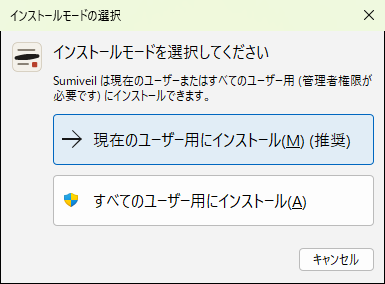
迷ったら「現在のユーザー用にインストール (推奨)」を選んでください。管理者権限は不要です。
「すべてのユーザー用」は、1 台の PC を複数人で使う場合向けです。管理者のパスワードを求められます。
※ インストーラーの色 (ライト/ダーク) は Windows の設定に合わせて変わります。
「同意する」を選んで「次へ」。インストール先は通常そのままで構いません。
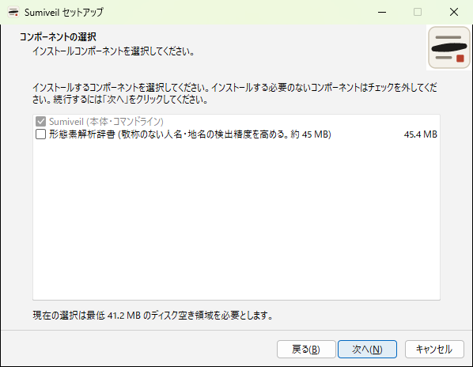
通常はそのまま「次へ」で十分です (本体とコマンドラインが入ります)。
「形態素解析辞書」(約 45 MB) を追加すると、「様」「さん」などが付いていない人名の検出精度が上がります。人名をしっかり隠したい場合はチェックを入れてください (入れた後に 7 章の設定で有効にします)。
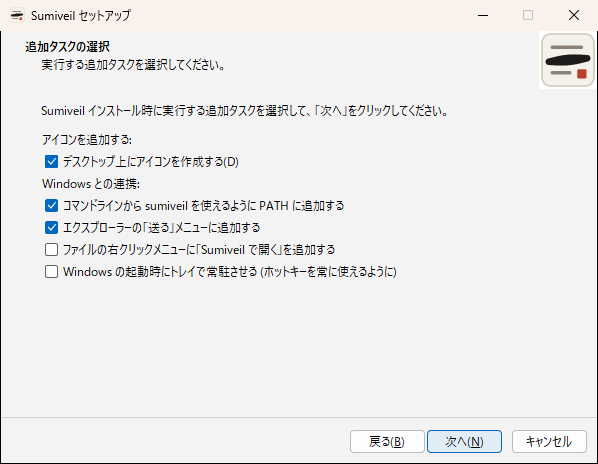
sumiveil を使う場合に必要 (9 章)。「次へ」→「インストール」で完了です。スタートメニューの Sumiveil から起動できます。
※ 新しいバージョンに更新するときは、新しいインストーラーを実行するだけです。最初に「Sumiveil の更新」の画面が出て、インストール先・設定・前回選んだオプションが引き継がれます (使用許諾の画面は出ません)。
ポータブル版 Sumiveil-1.0.1-portable-x64.zip を好きな場所に展開し、中の sumiveil-gui.exe を起動してください。形態素解析 (7-4) を使う場合は、Sumiveil-1.0.1-morphology-dict.zip も同じ場所に展開します (dict フォルダが sumiveil.exe と同じフォルダに入ります)。設定は同じフォルダの sumiveil.toml に保存されるので、USB メモリなどで持ち運べます。新しい版は同じフォルダに上書きで展開すれば、設定はそのまま引き継がれます。
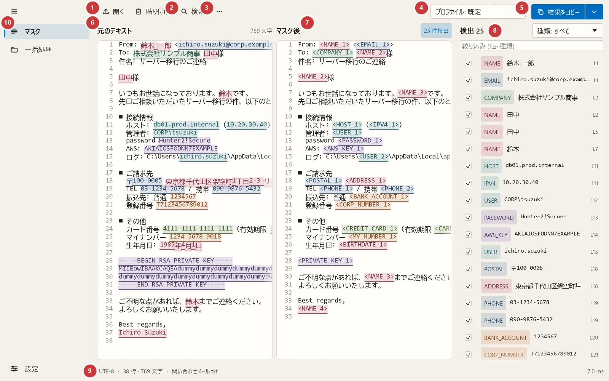
| 場所 | 役割 | |
|---|---|---|
| 1 | 開く・貼り付け | ファイルを開く / クリップボードの文章で置き換える |
| 2 | 検索 | 文字列を探す (4-5)。Ctrl+F でも開けます |
| 3 | ⋯ (その他) | クリア / マスクを再実行 / 検出一覧の表示 (幅が狭いときは隠れます) |
| 4 | プロファイル | 用途別の設定に切り替え (7-5)。迷ったら「既定」 |
| 5 | 結果をコピー ▾ | マスク後の文章をコピー。▾ から「ファイルに保存」「検出レポートを保存」 |
| 6 | 元のテキスト | 入力欄。見つかった箇所が色付きになる |
| 7 | マスク後 | 置き換えた結果と検出件数。左右のスクロールは連動 |
| 8 | 検出一覧 | 見つかった項目 (1 行 1 件)。「種類」で絞り込み、クリックでその場所へ移動 |
| 9 | ステータスバー | 文字コード・行数・文字数・ファイル名・処理時間 |
| 10 | メニュー | マスク / 一括処理 / 設定 (「情報」は設定の中) |
<NAME_1> などの意味既定では、見つけた情報を 種類名＋番号 に置き換えます。同じ値には必ず同じ番号が付くので、「誰が何をしたか」という文章の関係は読み取れたまま、中身だけが隠れます。生成 AI に質問するときにも、回答の中の <NAME_1> を自分で読み替えられます。
| 元の文章 | マスク後 |
|---|---|
| 田中様から 090-1234-5678 に連絡。田中様は明日来社予定。 | <NAME_1>様から <PHONE_1> に連絡。<NAME_1>様は明日来社予定。 |
置き換え方は [個人情報] ●●●● ***-****-5678 などに自由に変えられます (7-2)。
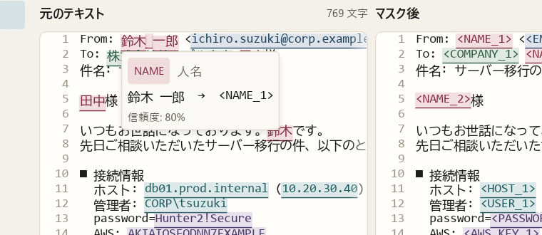
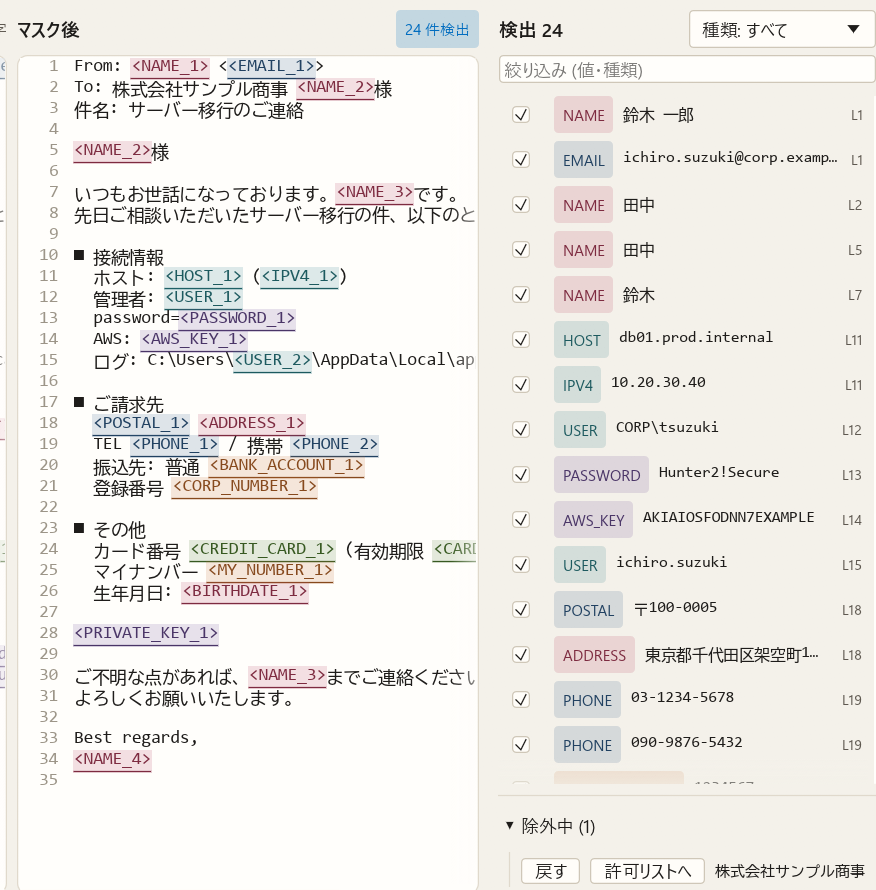
「開く」(Ctrl+O) またはウィンドウへのドラッグ＆ドロップで読み込みます。元のファイルが上書きされることはありません。
| 開けるファイル | 「保存」したときの形式 |
|---|---|
| テキスト・ログ・CSV・JSON など | 元と同じ形式・同じ文字コード (Shift_JIS・UTF-8 などは自動判別) |
| Word / Excel / PowerPoint | 書式を保ったまま同じ形式。作成者などのプロパティは「消す・マスクする・そのまま残す」から選びます |
| メール (.eml) | マスクしたメール (.eml)。添付ファイルは取り除かれます |
| PDF・Outlook のメール (.msg) | マスクしたテキスト (.txt)。PDF 自体は書き換えません |
Office 文書やメールを開くと、エディタの上に 1 行の状態バーが出ます (例:「Word 文書 · 読み取り専用 · プロパティ: 保存時に確認 ▾」)。「プロパティ ▾」を押すと、作成者などの記録内容と「消す / マスクする / そのまま残す」が表示されます。選ばずに保存した場合は、保存の前に確認されます。
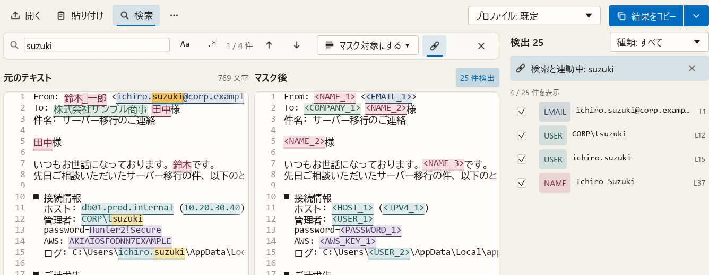
PRJ-\d{4}) を使えます。Sumiveil を開かなくても、メール・チャット・ブラウザなどでコピーした文章をその場でマスクできます。
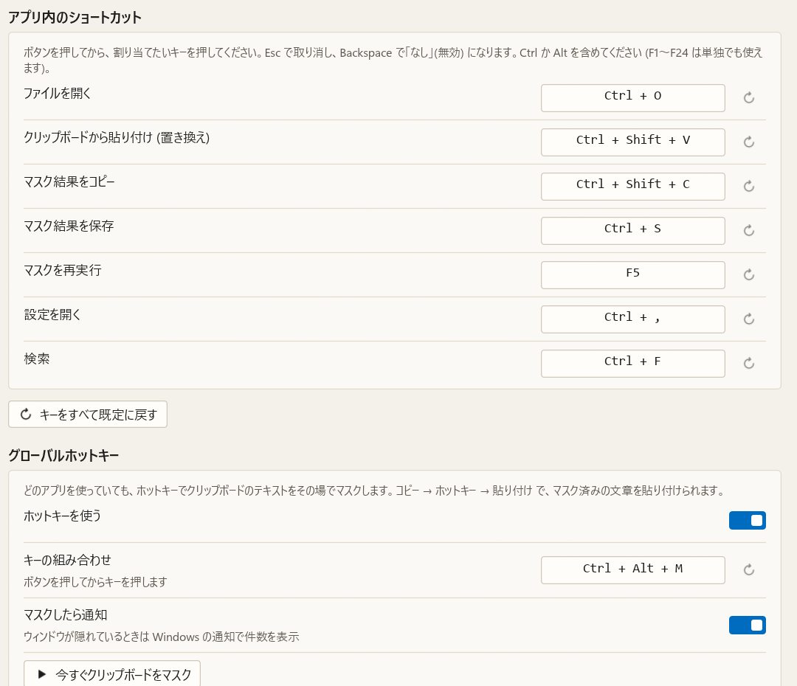
左のメニューの「一括処理」で、フォルダ内のたくさんのファイルを一度にマスクしたり、まとめて検索したりできます。元のファイルは変更されません。上部の「マスク」「検索」で切り替えます。
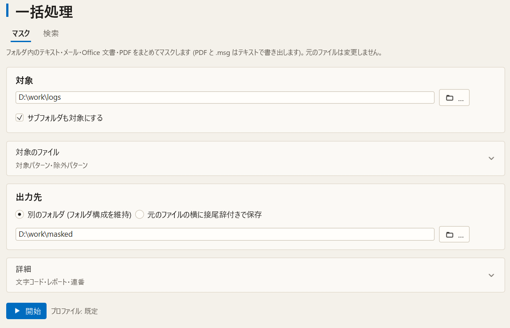
*.log;*.txt)。既定でテキスト・メール・Office 文書・PDF が対象なので、通常は開かなくて構いません。「詳細」の「ファイル間で連番を共通にする」がオンだと、複数のファイルに同じ人が出てきても、すべて同じ <NAME_1> になります。ファイルをまたいで関係を追いたいログ調査などで便利です。
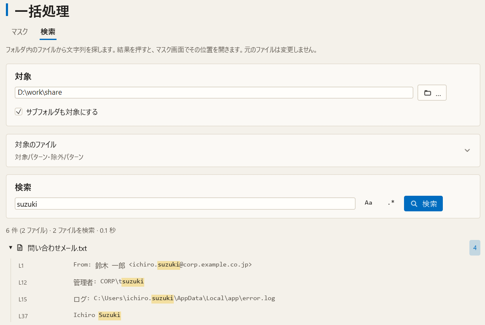
対象のフォルダを選び、検索する文字列を入れて「検索」(または Enter) を押します。結果の行を押すと、そのファイルがマスク画面で開き、一致した場所へ移動します。Office 文書・PDF・メールの中も検索できます。
左のメニューの「設定」で変更します。変更はその場で保存・反映されます (保存ボタンがある画面を除く)。
| 設定の項目 | 内容 |
|---|---|
| 全般 | 表示言語・テーマ (ライト/ダーク)・アクセントカラー・エディタ・描画方式 |
| 検出対象 | 検出の感度、人名・地名、項目ごとのオン/オフ (7-1・7-4) |
| マスクの表示 | 置き換え方 (7-2) |
| 辞書とルール | キーワード辞書・許可リスト・カスタムルール (上部のタブで切り替え。7-3) |
| プロファイル | 用途ごとの設定のセット (7-5) |
| ファイル | Office 文書のプロパティの扱い、設定ファイルの共有・既定に戻す (8 章) |
| キー操作とトレイ | ショートカットキー・グローバルホットキー・タスクトレイ (5 章) |
| 情報 | バージョン・利用ガイド・診断レポート (11 章) |
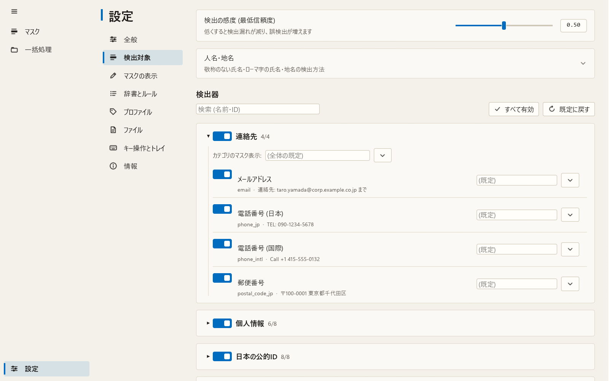
例: ホスト名を隠さなくてよい場合は「ネットワーク/IT」を開いて「ホスト名 (FQDN)」をオフにします。
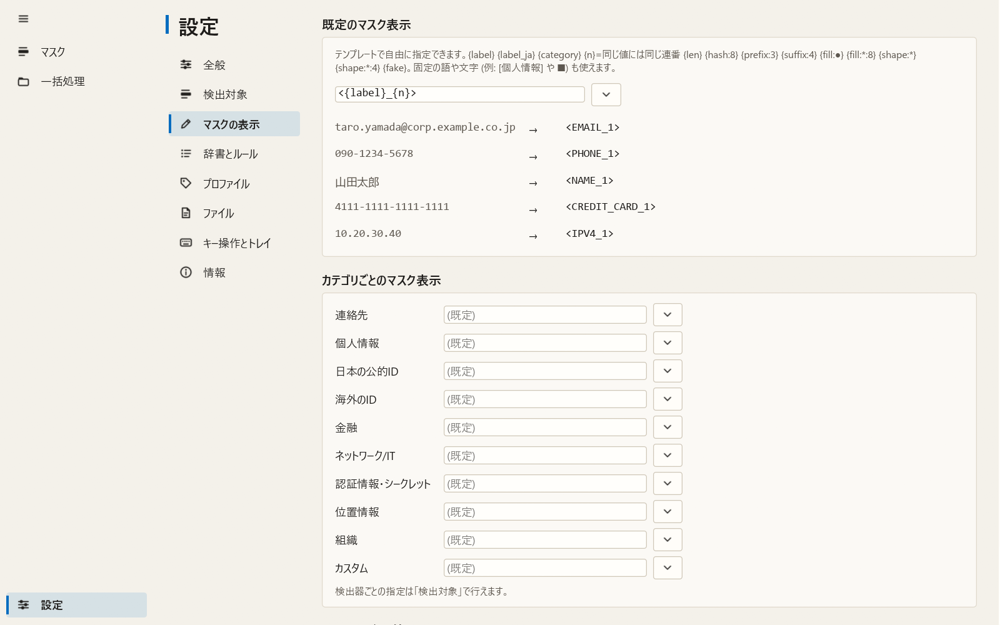
| 指定 | 結果の例 (元: 090-1234-5678) | 向いている用途 |
|---|---|---|
<{label}_{n}> (既定) | <PHONE_1> | 生成 AI への送信 |
[{label_ja}] | [電話番号] | 社外への文書 |
{fill:●} | ●●●●●●●●●●●●● | 見た目の長さを保つ |
{shape:*:4} | ***-****-5678 | 末尾だけ残して照合 |
[個人情報] (固定の語) | [個人情報] | 種類も伏せたい |
{fake} | 090-0000-0001 | 形式を保ったダミー値 (テストデータ作成) |
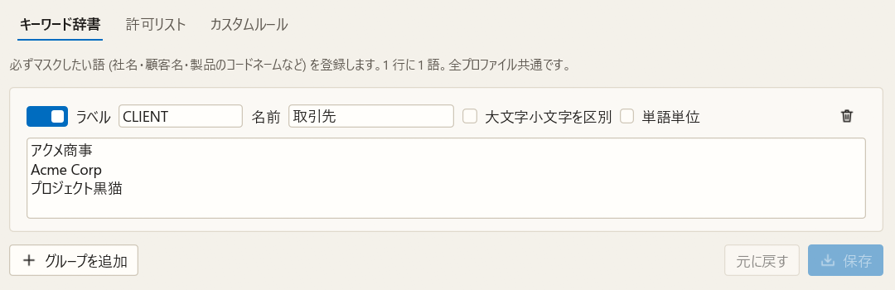
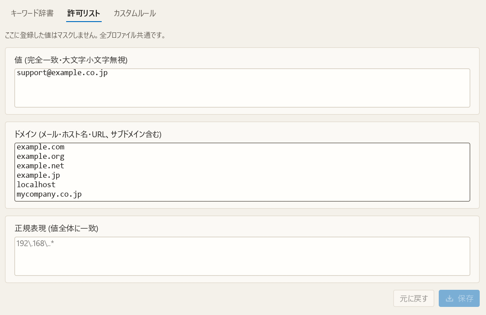
example.ne.jp) など、隠す必要がないものを登録します。「検出対象」画面の「人名・地名」を開くと、形態素解析 (インストール時に「形態素解析辞書」を選んだ場合) や地名の検出をオンにできます。画面の上のスライダーで検出の感度も調整できます。
切り替えはマスク画面の右上のプロファイル欄から。「設定」→「プロファイル」で自分用のプロファイルも作れます。プロファイル使用中に「検出対象」「マスクの表示」を変更すると、そのプロファイルにだけ保存されます。
| プロファイル | 内容 |
|---|---|
| 既定 | 標準の設定。まずはこれで使ってください。 |
| llm | 生成 AI への送信用。文脈を保つ連番タグ (<NAME_1>) で置き換えます。 |
| log_share | ログ共有用。形式を保ったまま伏せ字にし、IP アドレスは文書用のダミー値にします。 |
| strict | 厳格。日付・金額・URL・地名なども対象にします。見逃しを減らしたいときに。 |
設定はすべて 1 つのテキストファイル (TOML 形式) に保存されます。ファイルを渡すだけで、同じ設定を使えます。
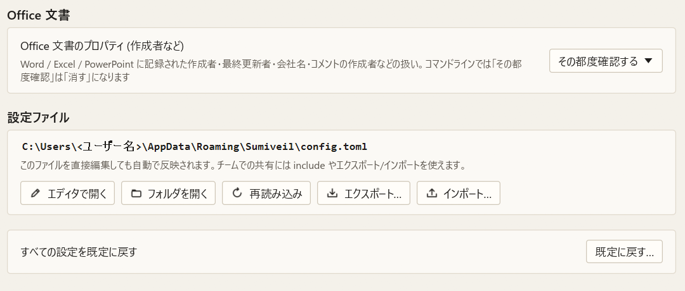
.bak として残ります)。include = ["\\\\fileserver\\share\\sumiveil-team.toml"]
設定ファイルをメモ帳などで直接編集しても、起動中の Sumiveil に自動で反映されます。各項目の意味は同梱の docs\config.md を参照してください。
インストール時に「PATH に追加」を選ぶと、コマンドプロンプトや PowerShell で sumiveil が使えます。インストール後に開いたウィンドウで実行してください。
# ファイルをマスクして画面に表示 sumiveil report.txt # 別のファイルに保存 sumiveil report.txt -o report.masked.txt # ほかのコマンドの出力をそのままマスク (パイプ) type app.log | sumiveil # 文字列を直接マスク sumiveil -t "担当 田中様 090-1234-5678" # フォルダをまとめて処理し、CSV レポートも作る sumiveil -r .\logs --out-dir .\masked --report .\masked\report.csv # 機密情報が含まれていないかチェック (見つかると終了コード 1) sumiveil check -r .\src # 設定の変更 sumiveil config set detectors.hostname.enabled false
すべてのオプションは sumiveil --help、詳しい説明は同梱の docs\cli.md にあります。
sumiveil config set gui.renderer software を実行するか、設定ファイルに renderer = "software" ([gui] の下) と書いてから起動し直します。.bak ファイルとして残ります。PATH やショートカット、右クリックメニューなど、インストール時に追加したものはすべて元に戻ります。
「設定」→「情報」で、バージョン番号と設定ファイルの場所を確認できます。GitHub の Issues (https://github.com/sumiveil-dev/Sumiveil/issues) で報告するときは、バージョンを添えてください。マスク前の文章や設定ファイルに機密情報が含まれる場合は、そのまま送らないでください。
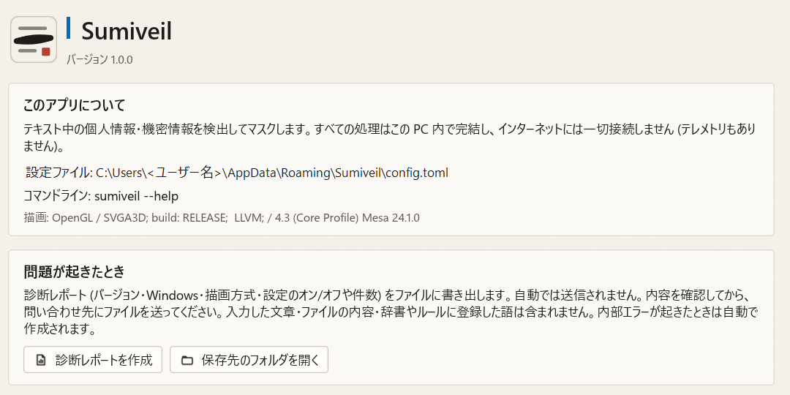
「問題が起きたとき」の「診断レポートを作成」を押すと、バージョン・Windows のバージョン・描画方式・設定のオン/オフや件数をまとめたテキストファイルを作り、エクスプローラーで表示します。内部エラーが起きたときは自動で作られます。
<ユーザー名> などに置き換えます。diagnostics フォルダです (インストール版は %APPDATA%\Sumiveil\diagnostics)。コマンドラインでは sumiveil diagnose で作れます。